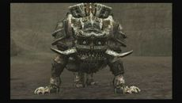
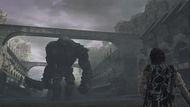

Shadow of the Colossus
 De: La Frikipedia, la enciclopedia extremadamente seria.
De: La Frikipedia, la enciclopedia extremadamente seria.

|
ATENCIÓN
Este artículo debería separarse en varios artículos. Ya que o bien habla de varios temas a la vez o que contiene definiciones o es tan extenso que debería ser dividido. Así que discusión del artículo. Y no olvides desambiguar después.
|

|
CUIDADÍNEste artículo o sección contiene alerones feos. O sea
SPOILERS.
|
De la serie Videojuegos:
Shadow of the Colossus

| Desarrollado por:
|
Godzilla
|
| Distribuido por:
|
sony computer enterramient
|
| Diseñado por:
|
Fumito Ueda Fume una rueda
|
| Motor
|
Agro (un caballo)
|
| Género(s)
|
Busca, Busca, encontrar, matar y parkour
|
| Fecha de lanzamiento:
|
...
|
| Modos de juego:
|
Busca colossus y matalos , si te pasas el juego te dan un modo contrareloj
|
| Requisitos:
|
tener paciencia para buscar y para matarlos
|
| Disponible en:
|
playstation 2 y playstation 3
|
| Formatos:
|
...
|
| Edades:
|
Todas las edades
|
| Puntuaciones:
|
Una obra maestra 10/10
|
Solamente mata a los colosos
«tu siguiente oponente domina el magnetismo y vive bajotierra»
~ Dormin en ves de decirnos como es el coloso nos da pistas
«¡deja de decir eso y dime ya donde esta el coloso!»
~ Wander lo que diria si tendria el diccionario
«¡Callate!»
~ Dormin regañando a wander por quejarse
es un juego donde lo unico que importa es buscar colosos y matarlos y hay un ultimo coloso el numero 16 es
el mas difícil y también da miedo, en este juego nuestro único compañero es un caballo, y tenemos un protagonista (que somos nosotros) llamado Wander, primero habla con Dormin que es un loco dios de los sueños y despues de eso sus únicas palabras eran Agrooo!
Historia
Una vez en el pueblo de un chico llamado Wander, su amada había muerto y decidió llevarla a la tierra prohibida para salvar su vida matando 16 gigantes, (¿qué clase de persona hace eso?, este chico es valiente) sus maestros lo pillaron robando la espada, después los maestros se aventuraron a esa tierra mientras Wander mataba a los colosos.
Ahora comienza lo épico, te toca ir a aventurarte a matar a los colosos, los primeros son fáciles de encontrar, muy fácil, pero... después de el coloso numero 1 y 2 se vuelve muy difícil encontrar a los colosos para matarlos.
Personajes
Wander
«...»
~ Wander diciendo "palabras"
el chico es valiente o tonto? no se sabe
Es el protagonista de la aventura, donde maneja a su fiel caballo llamado Agro después de matar a los colosos, absorbe un poco de energía del alma de Dormin y cada vez se vuelve más como un coloso, al final le entierran una espada en en el corazón y después cae como uno de los colosos, se convierte en Dormin, y después persigue a Lord Emon y sus guardias, (son indefensos los puedes usar como juguetes) pero al final Lord Emon tira tu espada a el estanque del castillo de rapunsel después el estanque te absorbe, te hace pequeño el estanque, hasta que te absorbe
Agro
Agro, El caballo que ha visto las batallas mas epicas en vivo, y ha vivido algunas de ellas
«Oh si, Sigue asi»
~ Agro Follando con wander viendo a wander pelear con un coloso
Agro es el caballo que más aguanta en el mundo, agregando a su lista de cosas que él aguanta
- Pisotones de colosos
- El bulling que tú le haces
- Tu manera de manejarlo
- Las flechas que le tiras incluyendo los espadazos.
Y muuucho más, al final se cae del puente en el que vas a combatir a Malus, después vuelve al castillo donde se encuentra con Mono que ¡¡¡Está viva, ESTÁ VIVA!!! después va con ella a la cima del castillo y disfrutas de los créditos.
Dormin
Es 99% Nigga, lo unico coloreado de algo que no sea negro son sus ojos azules
«Tu siguiente oponente es...un lugar con muchos artículos, en el mundo frikipédico, se oculta un macarrón muy fuerte»
~ Dormin Hablando del Monstruo Macarrón Volador
«Ui foe neui is... ou uiga somewo, on se ihiweh, e ou waiun»
~ Dormin Lo que se le entiende despues de decir lo de arriba
Es un diós de la tierra prohibida que fue sellado en los 16 gigantes invencibles, es de mucha ayuda, demasiada, nos dice todo lo que necesitamos saber, ¿qué si es mentira?, claro que si no, se la pasa diciendo palabras que no se entienden.
Mono
tu crees que me referia a un
mono?
Es más importante que Dormin, cuando terminamos de matar a los colosos se oye su voz diciendo: Eres un demente violador, al final ella despierta y va con Agro a la cima del castillo, primero agarra a Wander versión bebé, y luego van a la cima del castillo
Lord Emon
Es una persona con máscara de gato, en vez de ponerle Lord Emo le pusieron "Emon" Porque todos sabemos que el verdadero lord emo es este tipo del clan uchiha, al final él corre con su caballo rompiendo el puente de la tierra prohibida olvidándose de Mono y de Wander, el se vá con sus guardias, diciendo, Si aquí entra otro descerebrado como Wander, vá a morir, es mejor romper el puente para que ellos no salgan y después de eso se vá
¿Cómo son los gigantes?
Así son más o menos los gigantes.
Aquí están todos los colosos
Los gigantes no tienen ropa porque no hay de su talla en la tierra prohibida, solo tienen rocas alrededor y algunos tienen mazos gigantes, pero...estos colosos nunca salen cuando tu quieres sino que tienes que matarlos en orden, Ejemplo:
«Uf, por fin llegué al coloso 7, ya me pasé el juego por lo tanto se donde está»
~ Jugador al llegar al coloso 7
«¡Fuck!»
~ Jugador después de ver en el lago del coloso 7, y el coloso no está
Cómo matar a los colosos
Aquí está la lista del el nombre de los colosos y cómo matarlos (sacado del colosos-dex)
- Valus minotaurus colossus: para matarlo necesitas que camine hacia el lado opuesto a ti, ahora te agarras de su pierna y le clavas cuchillazos con tu espada, (en ese tiempo no habían bazucas o AK-47 que pena por ti) bien después se caerá al suelo porque le duele la pierna, ¡aprovecha!, te subes por su pierna llegas a unas armaduras de él, para descansar, (no puedes durar mucho agarrándote a sus pelos) te subes a su cabeza , y ahora ¡acuchillalo! se moverá para evitar su muerte, pero ¡sigue acuchillandolo!, en algún momento se va a morir y suelta tentáculos negros que se meten en el corazón de Wander, listo, ahora a por el segundo coloso
Él se merecía el puesto de Agro, ¿no?
- Quadratus Taurus magnus: lo encuentras en una playa, de ahí sale de unas paredes y te perseguirá, sus ataques son pisando duro la tierra con sus dos patas delanteras, pero tú solo ponte detrás de él, le disparas una flecha a sus patas, ¡rápido!, las flechas no lo detendrán por mucho (si tan solo hubiera una bazuca, no le pasaría por la mente seguir de pié) después te subes por su pelo, su primer punto débil está en su trasero, es hora de meterle la espada por su trasero, pero no se murió...tiene otro punto débil en su cabeza, ¡vé a a por él!, se moverá como una montaña rusa agitándose, después de llegar a su cabeza, ¡mátalo!, y se muere, suelta los mismos tentáculos que Valus
Parece que Slenderman ya tiene un hermano
- Gaius Terrestris Veritas: este coloso es muy alto, lo encontrarás en la plataforma de un lago, tiene un mazo gigante que es como una espada, bien sus ataques son con su mazo gigante golpeándolo a la tierra, el mazo quedara atascado te tienes que subir al mazo, pero tiene un brazalete, (troll) tienes que romperle el brazalete haciendo que su mazo impacte con una plataforma metálica, su brazalete se romperá y ahí puedes pasar, tiene dos puntos débiles en su cabeza y en su estómago, ve a por su cabeza primero, (recomendable) después el de el estómago y muere el coloso, ¡a por el siguiente!

Sus patas de cangrejo y en su totalidad forma de caballo
- Phaedra Equus Bellator Apex: lo encuentras en un valle de tumbas, lo primero que tienes que hacer es llamarle la atención y después refugiarte en una tumba, el coloso empezara a buscarte, pero eres tan camper que ni el coloso te puede encontrar, después se agachara a buscarte en una tumba, Atención: tienes dos opciones; la primera es subirte por su bigote que estará por la salida de la tuba, y la segunda y mas sencilla salir por otra tumba y ya qué el coloso te está buscando por ahí, tú le saltas a su cola, y le acuchillas el cuello para bajárselo porque su cuello es muy alto, después acuchillarlo en la cabeza, y morirá (Nota:este coloso cuando se agita para hacerte caer de su cuerpo, parece que estuviera bailando)
Debió de trabajar en
Cómo entrenar a tu dragón
- Avion Avis Praeda: es un coloso con forma de pájaro, tiene tres puntos débiles; en sus dos alas y en su cola, estará en un lago, lo que tienes que hacer es ir por el agua, iras muuuuy lento, una vez que llegues a una plataforma llama su atención, no con chistes, metiendole flechazos desde la plataforma, esto lo provocara para hacerte un Mega fatality K.O bajará a hacerte una embestida fatality pero te agarras por un poco de pelo que hay en sus alas de ahi vas a por las alas y después por la cola del coloso cuidado; algunas veces va a girar, ok terminaste con el quinto coloso.
Parece el hermano gemelo de Valus
- Barba belua Maximus: lo encuentras en un templo subterraneo en el desierto, bajas por el templo, y ¡sorpresa!, te saldrá de un muro, ¡RUN BITCH! corre como
perra sin cadenas Sonic bien rápido tendrás que saltarte algunos muros, el los romperá, ¡ES UN GIGANTE ¿QUÉ ESPERABAS?!, después te refugias en unos pilares, él se asomara agachando la cabeza, ahora es tu oportunidad, súbete a su barba hasta la cabeza. lo acuchillas y después vete a su espalda, lo acuchillas ahí murió el coloso.
Una serpiente marina (Wow!, qué descripsión!)
- Hydrus draco marinus: lo encuentras en un lago, no podrás llamarle la atención, a menos que tengas las agallas suficientes para ponerte delante del coloso, este te embestirá pero tu esquivas la embestida y agarras su cuerpo, de ahí vas hacia adelante, ¡cuidado!, él se hunde en el agua, lo que significa que tienes que pulsar R1 cuando termines de correr por su cuerpo, llegarás a encontrarte con espínas son 3 en total, tú le das cuchillazos a las espínas, luego llegas a su cabeza y lo matas, ¿muy sencillo no?
¿¡Qué clase de cosa es esa!?
- Kuromori Parietinae Umbra:se encuentra en el centro de un coliseo, este coloso puede lanzar una bola de energía, pero no es la bola la que mata... es el olor, lo que tienes que hacer es; hacerle subir a los muros, después le disparas flechas en sus patas y se caerá, le das cuchillazos probablemente no lo logres a la primera , tendrás que repetir esto la segunda vez y listo (demasiado fácil)
- Basaran nimbus recanto: este es uno de los colosos más difíciles, para subirte a el tendrás que guiarlo a unos geisers de agua, cuidado puede lanzar los cometas de energía de kuromori solo que mas fuertes y destructores, recuerda que es una tortuga es muy lento, una vez que el agua lo agarre tendrás que dispararlo a sus patas después el se volteara y caerá, sube por su panza hasta llegar a su caparazón, cuidado se mueve mucho pero hay unos pequeños pilares en su caparazón así que no hay problema que se mueva tanto, después acuchilla su cabeza (Este pequeño escrito parece describirlo como fácil, pero es mas difícil que entender lo que dice Dormin)
Su mirada es traumante, además su boca también
- Dirge Harena Tigris: es un gusano encontrado en una cueva con arena, la forma de vencerlo es un poco difícil, sus únicos ataques son perseguirte por la arena, pero aunque parezca normal que te ataque por debajo, ese ataque podría quitarte la mitad de salúd, puedes recuperarte en unas rocas, bien ahora
viola sube a tu caballo, vas a hacer algo muy loco, te pondrás delante de este bicho como si fueras un raton corriendo de un gato ahora, te mirará con sus ojos, puede traumarte mucho sus ojos y su boca, le disparas una flecha en el ojo y se estrellara contra un muro, si no le disparas con la flecha rápido te hará un Mega fatality arenistico eso si te puede quitar toda la salúd, bien ahora que está así, se quedará trabado y tu aprovecharás para acuchillar su cuerpo, (Atención:este método tendrás que repetirlo dos veces) no sé donde acuchillarás su cuerpo ya que no sé si tiene panza o pecho, pero vale una mierda donde lo acuchilles, después morirá
 Esos cuernos...estoy seguro que no son para algo bueno
- Celosia Ignis Excubitor: en este momento celosia sera el coloso MÁS difícil de encontrar, después de ver vídeos en Youtube para saber donde esta el coloso, te encontrarás con él, sus ataques son rápidos quitan mucha vida y una vez que te haga un ataque probablemente ya estes muerto no por quitarte toda la vida. es porque cuando intentas levantarte te vuelve a chocar los cuernos, ¿has notado los piláres de los lados?, (tú:obvio no soy ciego, o tal vez si) entonces te subes a los piláres, el coloso chocará con el muro en el que te subiste, procura agarrarte del muro para no caer, después caera una antorcha, tu agarras la antorcha con el botón circulo, ahora te pones delante de él y ya que él le teme al fuego se hechará para atrás, no te acerques demasiado te puede dar un garraso, ¿has visto qué hay un lugar sin pared?, (tu:está delante mío, ¿¡cómo no lo voy a ver!?) tienes que hacer que el coloso se acerque al lugar sin pared y se caerá, se romperá su armadura, caele encima y ¡matálo!, ¡acuchillalo! y el coloso morirá.
No tiene ojos?, entonces, ¿cómo puede verme?
- Pelagia Permagnus Pixtrix: se encuentra en un lago, sus ataques son tirarte rayos por los cuernos solo eso nada más, tienes que llegarle por la espalda y subirte, tiene la piel tan dura como una roca por lo cual no servirá tu espada, (tú:tienes razón, nececito dinamita para explotarlo) nececitas irse a su cabeza, de ahí podras tomar Semi-control de este robot después de todo, no tiene ojos, tienes que dirigirlo
hacia una tienda de ojos hacia las plataformas que están en el agua, te saltas a uno y luego esperas el movimiento del coloso, pondrá sus patas delanteras arriba, tú te subirás en un bicho colgante debajo de él, me pregunto que será luego lo acuchillas, hazlo una o dos veces más y vences al coloso, está facil, verdad?
Es subterraneo y aéreo, tiene tres ojos, y es más grande que Malus, no podría ser más raro
o si?
- Phalanx Aeris Velivolus: lo encuentras en el desierto, este bicho es volador, lo primero que tienes que hacer es dispararle a las 3 bolsas de aire que tiene debajo de él, después caera, ahora al estilo Indiana Jones, tiene las aletas en la arena, ¡AHORA! con Agro, salta de su lomo, hacia el saliente de una ala, el coloso
mágicamente va a volar con las bolsas aun destruídas, tú te vas a ir corriendo por su cuerpo atacando sus puntos débiles, pero rápido que este bicho tiene una especie de escudos que se tapan cuando va a bajar por la arena, repite esto dos veces y con mala suerte no lograrás nada lo lograrás (Nota:es completamente pacífico, vencerlo es sencíllo)
- Cenobia Clades Candor: este coloso es igual que el coloso 11 en tamaño y en todo, la forma de vencerlo es haciendo Mega parkour tienes que saltar por muros, paredes, pilares
tetas, al final llegas a romper un muro con un pilár, después de eso, tienes que subir por los salientes, ahí verás que estás en la entrada del campo de batalla, tienes que provocar al coloso tirandole flechas con tu arco, (con los pilares tambien haz lo mismo) ya que toro se cree más fuerte le dará a los cubos que sostienen las rocas de arriba, y le caerán encima todas las rocas, él se libera con su armadura rota, y un pedazo de armadura le tapará un ojo, solo tienes que matarlo de ahí en adeltante, acuchillandolo con tu espada
 Definitivamente, su segundo punto débil es el más oculto de todos
- Argus Praesidium Vigilo: se encuentra en un castillo, este coloso saldrá de un precipicio, que raro su peso no lo dejaría subir pero bueno, es un poco más rapido que sus dos hermanos que son Barba
de santa claus y Valus, tiene una espada gigante, se desconoce de donde la sacó, pero vale verga, tienes que dirigirlo a las plataformas de los lados, tirale flechas el se enojará contigo e intentará aplastarte lo puede lograr, después de eso, la plataforma se irá arriba debido al pié del coloso, usa eso para subirte, después lanzale flechas para que use su espada mega gigante para chocarla con unos pequeños pilares, se caeran unas rocas, ni idea de donde salen, pero sigue tu camino, vé hacia arriba entonces verás un puente, llamale la atención al coloso para destruír el puente, él chocara su espada contra el puente destruyéndolo, (tú: pero... en que mierda ayuda eso) después el coloso pasará cerca del puente, ¡salta a su cabeza y acuchillalo!, pero cuidado, se mueve demasiado, se acabó el punto debil pero el coloso no ha muerto, pos ahí es donde te cagas en los pantalones buscando el punto débil, vé a su codo derecho, y mete la espada ahí, él soltara su espada, después dejate caer al suelo, (tu: ¿y qué pasará después?, ¿morirá?) después de eso el coloso no usará su espada para atacar, ahora usara su mano, el punto débil está ahí, ¡en su mano!, (tu: ¿con qué ahí estaba tu punto débil?, ¡vas a sufrir!) después de eso cada vez que ataque con su mano tienes la oportunidad de guindarte a su mano para así matarlo, solo falta un coloso, ¡a por él!
Es enoooooooooorme, a no espera esa era la torre de pisa, no, espera, ¿es el coloso?, parece una torre
- Malus Grandis Supernus: Ahora te tocará combatir contra un coloso muy cabrón, antes de esto el coloso se encuentra en una puerta, apunta la luz de la espada para que se abra solo pasa eso si matas a los demás colosos, sube con Agro por las escaleras, ahora hay un puente, crúzalo, sin problemas hasta que...una pieza rota, Agro con sus ultimas fuerzas empuja a
el idiota que no hace nada mientras su caballo muere Wander hacia adelante Despues de eso Wander grita ¡Agrooo! mientras el caballo cae lentamente y mientras tú lloras después de eso, Wander no podia perder, ¡NO PODIA!, sube por el muro y llega hasta arriba, un momento va a llover, perfecto para la batalla final, sube por unas columnas y llegarás al campo de batalla, el coloso hará gestos como Por fin me puedo mover, soy libre!, hola c:, Wander le dirá Hola te vengo a matar y el coloso te lanzará un mega misil, puedes moverte y todo pero el misil va dirigido, escóndete en la columna de la derecha, baja por un hueco, pero el coloso tiene visión de rayos X y te sigue disparando, después de subir puente en los escudos, sigue este proceso hasta llegar a ninguna parte abajo de él, subete por unos salientes y escala su cuerpo, el no se movera... aún, llega a su espalda y metele un espadazo el acercará su mano, agarra la mano, después él verá qué tiene en la mano, corre por su brazo y llega a el lugar con pelos, métele otro espadazo, él acercará su otra mano, agarrate de esa otra mano, metele un espadazo pero que él te pueda ver, ahora intentará verte mejor, mientras esta distraído, viendo tu pene tú le tiras una flecha al hombro derecho, agarrate de él, después de eso dale otra vez para ahorrar tiempo, y subirte a su cabeza para acuchillarlo, despues de eso, ¡morirá!, pero no se cae simplemente se baja un poco y ya, listo has derrotado al último coloso, ya eres feliz?, okay, ya sabes todo sobre matar colosos, ahora sal con tu espada o con tu bazúka y mata los colosos.
Armas
Estas si son armas necesarias
Espada
Es un arma que Wander le robó a Lord Emon y es la única espada que puede matar colosos, además tambien te sirve como radar de esferas de dragon como brujula para buscar colosos más nada
Arco
Es otra arma inservible, se usa para llamar la atención de los colosos, tambien se usa para disparar a los puntos débiles, como el de la tortuga rara que es basaran, esta arma se volvera mejor con sus mejoras que te ganas en contrareloj como la flecha silbante y la flecha explosiva junto con el harpon trueno
Modo Contrarreloj
Te lo ganas pasándote todo el juego, cuando no te queda nada más que hacer, crees que has terminado, pero te lo ponen más difícil, para jugar este modo tienes que ponerte delante de una estatua del coloso que quieras pulsa el boton circulo y te drogaras para matar colosos, es simple tienes que derrotarlos antes del límite de tiempo.
Enlances Externos
|
|
 Shooter Shooter
 Terror Terror
 Velocidad Velocidad
 Rol Rol
 Estrategia Estrategia
 Aventuras Aventuras
 Fight! Fight!
 Clásicos Clásicos
 Deportivos Deportivos
 Aventura gráfica Aventura gráfica
 Novela visual Novela visual
 Personajes de videojuegos Personajes de videojuegos
|
Autor(es):
- Krusher
- Kenshi377full
- Jidef
- Sockerman
- JDR99
Frikipedia 2005-2016, Licencia
GFDL 1.2 - Extraído por FrikiLeaks